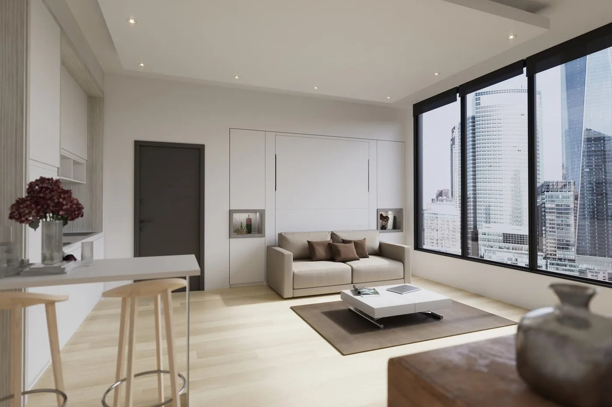
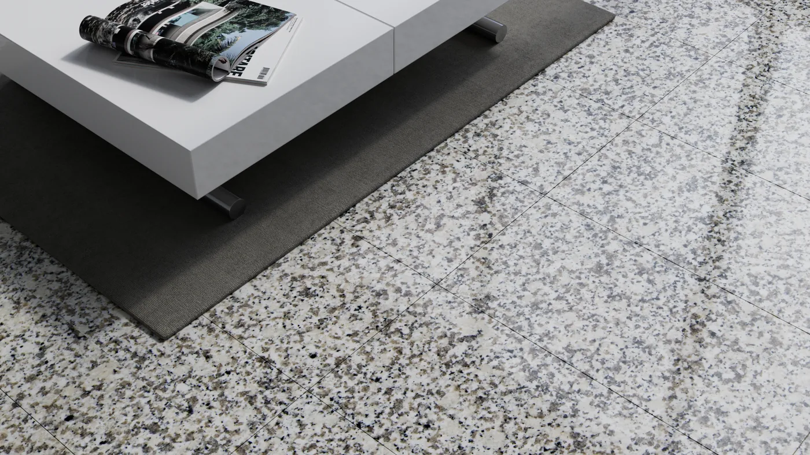
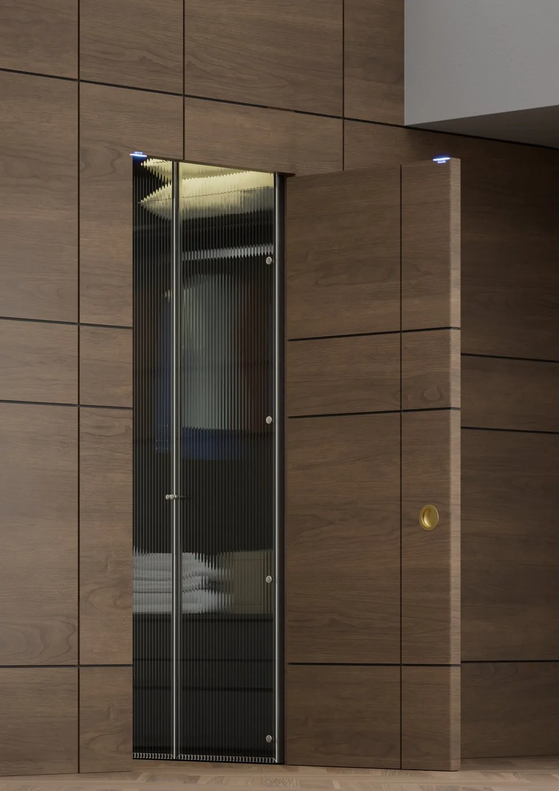
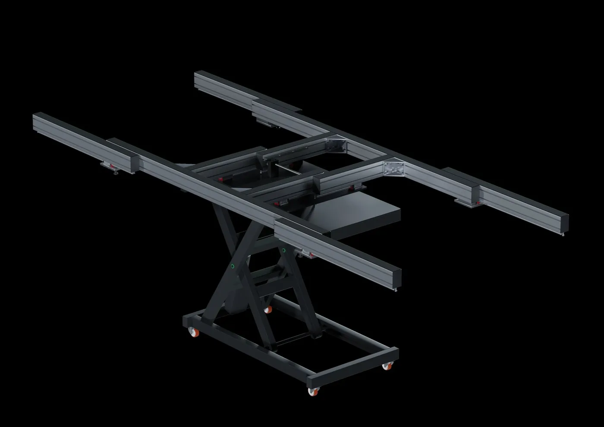

Anche con zero materiale a disposizione: dalla digitalizzazione totale al primo configuratore parametrico italiano. Il filo conduttore è sempre lo stesso — portare il prodotto dal fisico al digitale e farlo vendere.

Digitalizzazione totale di un catalogo di letti di lusso partendo da zero file: scomposizione GLB, tiling, e un configuratore con oltre un miliardo di combinazioni.

Il primo configuratore 3D parametrico in Italia per superfici in marmo e granito, con ROI misurabile su resi e errori di configurazione.

Dal catalogo cartaceo al configuratore: un sistema semi-automatico che genera 20.000+ immagini coerenti per le maniglie di design.

Da sole fotografie e misurazioni a un tavolo per serramentisti in 3D: digitalizzazione fisico→digitale senza alcun file preesistente.
Anche se la tua azienda non ha ancora nulla di digitale, si parte da qui.
Parlami del tuo prodotto →